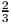
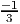
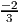
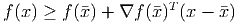
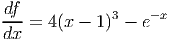
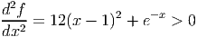
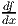
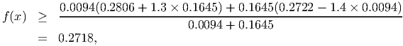
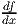
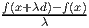

where gi(x) and hi(y) are convex functions for i = 1,…,p, and f(x) is a convex function. Note that the only variables in the minimization problem are x, with y playing the role of a parameter. If the minimization problem is infeasible for some then we define r() = +∞. Is r(y) a convex function of y? Prove or give a counterexample.
Solution:
The function r(y) is convex. Let y1,y2 ∈ ℝm and λ ∈ [0, 1]. Define

If either r(yj) = +∞ for j = 1 or 2 then we immediately have r() ≤ λr(y1) + (1 - λ)r(y2). Thus, in what follows, we assume r(yj) < +∞ for j = 1, 2. Let xj satisfy
for j = 1, 2. Set
By convexity, we have
and also
We can use these observations as follows. We have

Solution:
Since C is the unit sphere, this question is straightforward. Closest point is = (,,)T .
Distance is ||y||2 - 1 = 2. Separating hyperplane is 2x1 - x2 - 2x2 = 6.
Show that the point = 0.5(1, 1, 1)T is not in the convex hull of S, by finding a hyperplane which separates the point from the set.
Solution:
We have S = {(0, 0, 0), (1, 0, 0), (0, 1, 0), (0, 0, 1)}, since every other binary point violates at
least one of the constraints. A constraint that is satisfied by S and violated by
is
Solution:
The first and second derivatives of f(x) are
and
for -α < x < α.
- Show that f(x) is a strictly convex function for x ∈ ℝ.
- We want to get a lower bound on the optimal value of this problem. Use the subgradient
inequality
 to find an interval [a,a + 0.1] that contains the optimal solution. What lower bound do you get on the optimal value from your interval?
Solution:
- The first and second derivatives of f(x) are
 and
 for all x ∈ ℝ.
- We want to find an interval with negative derivative at the left hand end point a and
positive derivative at the right hand end point a + 0.1. Using binary search, we can find
an interval:
x f(x)  1.1 0.3330 -0.3289 1.5 0.2856 0.2787 1.3 0.2806 -0.1645 1.4 0.2722 0.0094 Thus, we take a = 1.3, giving the interval [1.3, 1.4].
The subgradient inequalities from x = 1.3 and x = 1.4 are
Adding 0.0094(1) and 0.1645 (2) and then dividing by 0.0094 + 0.1645 gives the valid inequalityso this is our valid lower bound. Pushing the binary search further, we can get:
x f(x)  1.395618 0.27217643045492262 -1.5302038221254310E-006 1.395619 0.27217643045445539 5.9564394724875847E-007
Solution:
We know the ratio  is monotonically increasing as λ increases.
First assume the inequality holds:
Pick any point x ∈ C. Define d = x -. We have
Rearranging, we get
so ξ is a subgradient of f(x) at .
Now assume ξ is a subgradient at :
Pick any direction d ∈ ℝn. There exists > 0 such that for 0 ≤ λ ≤, we have + λd ∈ C.
Since ξ is a subgradient, we know
for 0 ≤ λ ≤. It follows that
for 0 < λ ≤. Taking the limit as λ → 0 gives the required result, namely